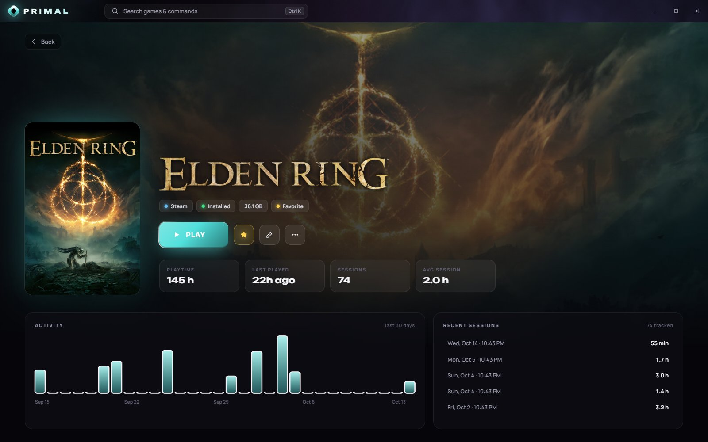
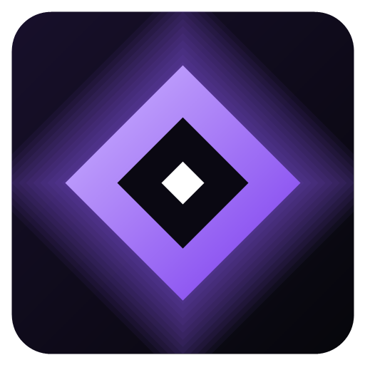
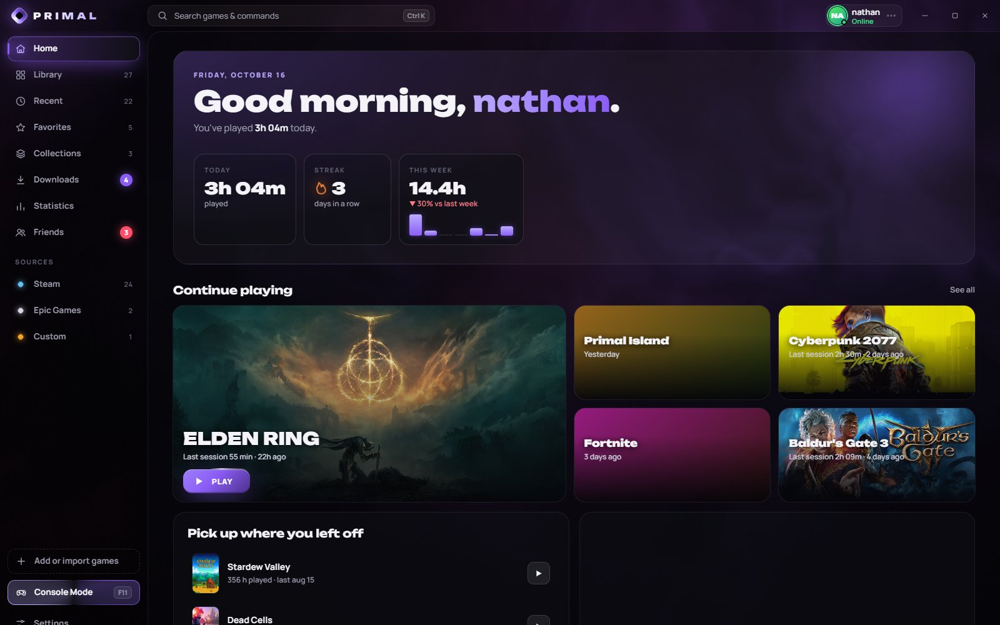
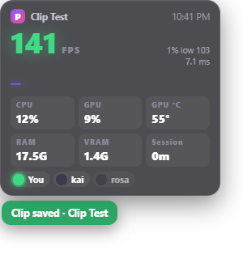
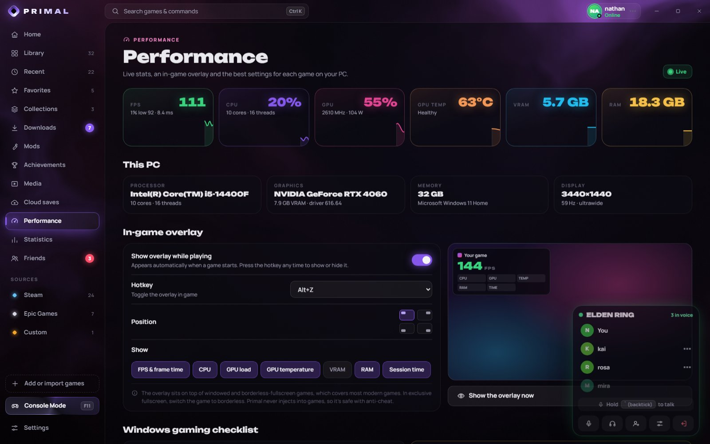

Press Play. That's it.
Games start straight from Primal: no Steam, Epic or Xbox window popping up first. Anti-cheat games go through their own protected launcher automatically, so nothing gets flagged.


PRIMAL DownloadSteam, Epic, GOG, Xbox, EA, Ubisoft and Battle.net games in one fast, beautiful library. Your games start straight from Primal, and mods, cloud saves, clips, an in-game overlay and voice chat are built in. Free for Windows.


Your whole library, from every store
Primal does what your launchers, mod managers, recorders and overlays do, in one place that looks the part.
Games start straight from Primal: no Steam, Epic or Xbox window popping up first. Anti-cheat games go through their own protected launcher automatically, so nothing gets flagged.

Install Steam, Epic and GOG games from inside Primal, browse PC Game Pass, and grab EA, Ubisoft and Battle.net games with live progress.
Nexus Mods and Thunderstore built in, with one-click installs, FOMOD installers, load order, conflict detection, profiles and safe uninstall.
Knows where 21,800+ games keep their saves. Backs them up after every session with full version history, and syncs between your PCs.
Steam and Xbox achievements in one place, with rarity, completion tracking and a leaderboard against your friends.
An in-game overlay with FPS, 1% lows, CPU, GPU, temperatures and VRAM, plus the best settings for each game on your exact PC, including when to turn on DLSS or FSR.

Your own friends list with chat, game invites and an activity feed. Jump into a voice party with push-to-talk that works mid-game.
Press Alt+F10 and the last 30 seconds are saved. Trim it, then send it to a friend, all without leaving Primal.
A full-screen, controller-friendly mode for the couch. Press F11 and play.
Home: what's new in your games, deals and where you left off.
Clips and screenshots run on Primal's own native recorder. It captures your screen and encodes video right on your graphics card (NVIDIA NVENC, AMD or Intel), records game audio and your mic, and keeps the replay buffer in memory. You won't feel it while you play.
Yes, completely: no ads, no subscription, no account needed to use the launcher. An account is only for friends, voice parties and cloud saves.
For Steam games, Steam runs quietly in the background because it checks you own the game; you never see its window. Epic and GOG games install and launch without their launchers at all. Xbox, EA, Ubisoft and Battle.net games install through their own apps because those stores license their games, and Primal opens the right page and tracks the install for you.
No. Primal launches anti-cheat games through their own protected launchers, never injects anything into games, and its overlay is a separate window. Mods are blocked by default for online anti-cheat games, with a clear warning.
That message appears for new apps Windows doesn't recognise yet. Click More info → Run anyway. Primal is downloaded from its official GitHub releases and keeps itself up to date from there.
No. Primal launches and installs games you own, through the stores you bought them from. It never cracks or bypasses ownership checks.
Primal checks for new versions on its own, downloads them in the background and installs them the next time you restart it. You'll see an "Update ready" button when one is waiting.
Download Primal and bring your whole library together in under a minute.
Download for WindowsWindows 10 & 11 · 64-bit